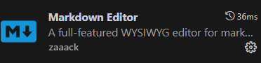
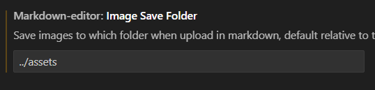
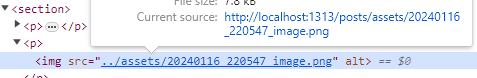
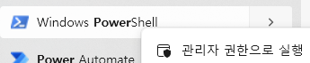
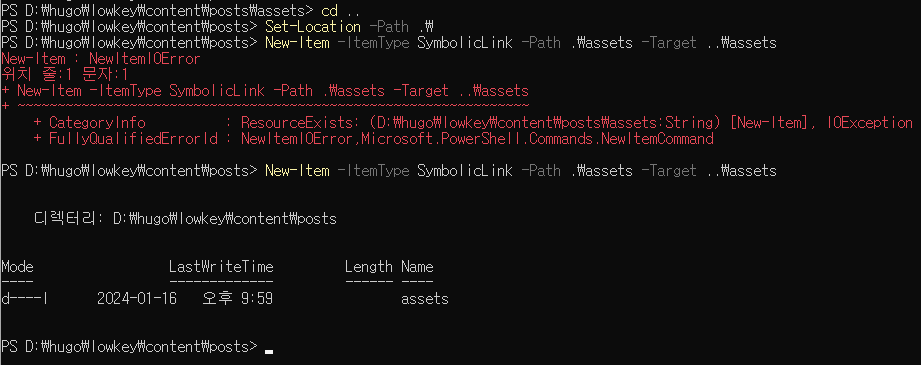
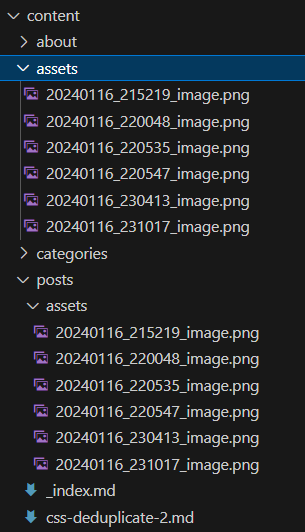

심볼릭 링크로 마크다운 에디터로 업로드한 이미지 HUGO에서 바로 확인
Vscode의 Extension 중 하나인 Markdown Editor 를 통해 WYSIWYG 방식으로 편집할 때 이미지를 붙여넣기 하면 마크업 에디터에서는 잘 보이지만 hugo server 로 서버를 띄워 확인해보면 경로가 맞지 않아 이미지가 뜨지 않게 된다.
설정 화면으로 이동하여

이미지 경로를 다음과 같이 설정한다.

위와 같이 설정하면 문서가 존재하는 posts의 하위 디렉토리인 content 의 assets 디렉토리에 붙여넣기한 이미지 파일이 저장된다.
하지만 브라우저를 통해 페이지를 확인해 보면 제대로 이미지가 뜨지 않게 된다.
실제로 이미지가 저장된 경로는 content/assets 이지만 블로그 포스트의 url은 파일이름(포스트이름)이 한번더 들어가기 때문이다.
http://localhost:1313/posts/symboliclink/

실제로는 content/assets 디렉토리에 파일이 있다. 마크업 소스상에 ../assets/이미지파일명 형태로 입력되어 있기 때문에 url상에서의 이미지 파일 위치는 /posts/assets 이어야 한다.
심볼릭 링크를 통해 content/assets에 파일이 생성되면 content/posts/assets 디렉토리로 파일이 복사되도록 처리해보자.
파워쉘을 관리자 권한으로 실행한다.

content/posts 디렉토리로 이동하여 아래의 명령어를 수행한다.
Set-Location -Path .\
이어서 같은 폴더에서 다음과 같이 명령어를 수행한다.
New-Item -ItemType SymbolicLink -Path .\assets -Target ..\assets

중간에 에러가 발생한 이유는 posts/assets 디렉토리가 이미 생성되어 있기 때문에다. 탐색기에서 해당 디렉토리를 삭제후 재시도 하면 정상적으로 심볼릭 링크가 생성됨을 확인할 수 있다.
탐색기에서는 아래와 같이 보인다. (참고로 심볼릭 링크를 삭제하려면 해당 디렉토리를 탐색기에서 삭제하면 된다)
이제 이미지를 붙여넣기 하면 content/assets 디렉토리에 파일이 저장되면서 동시에 content/posts/assets 디렉토리에도 파일이 생성되는 것을 확인할 수 있다.

참고로 windows cmd.exe 에서 mklink 명령어를 통해 심볼릭 링크를 생성하는 방법이 있지만 해당 방법으로 링크 생성 후 hugo 서버를 수행하면 에러가 발생한다.
참고 url : https://mikefrobbins.com/2023/02/08/rendering-images-in-markdown-preview-of-hugo-site/